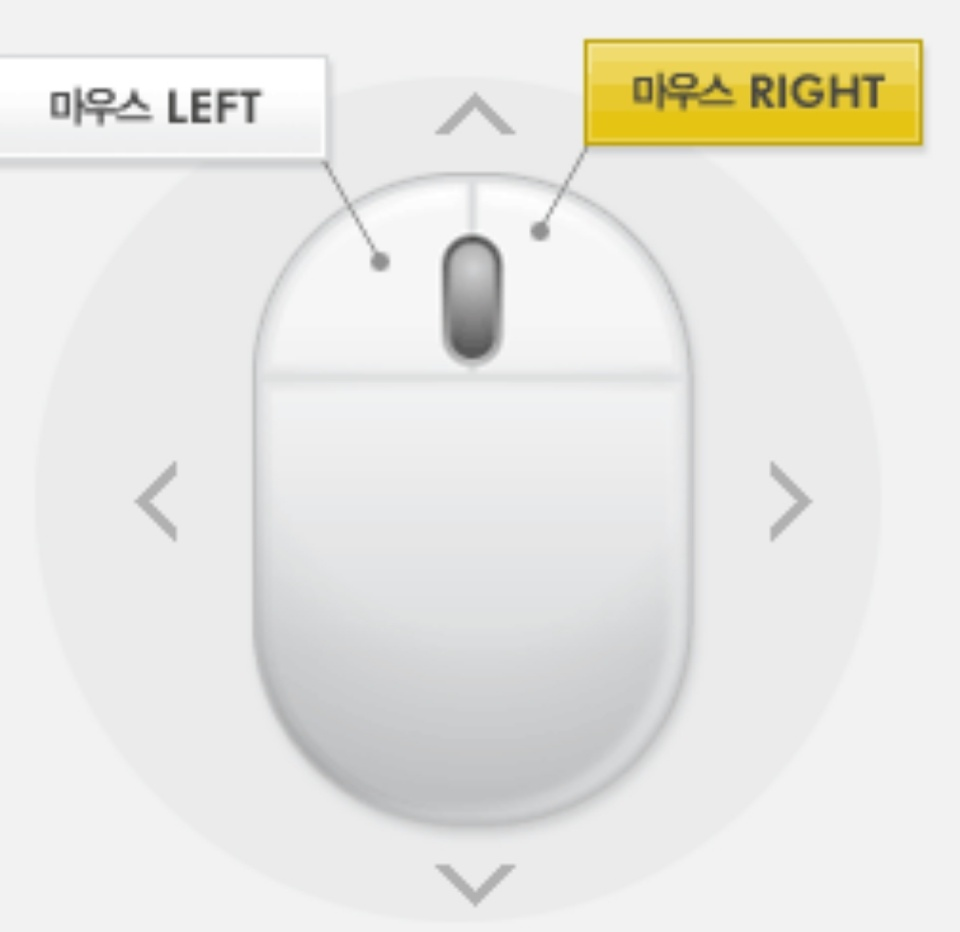

(인터페이스)키보드와 마우스 조작법
●키보드 조작
- WASD/이동: 키보드조작을 통해 자유롭게 이동할 수 있다.
- E/궁극기: 쿨타임이 길지만 매우 강력한공격 스킬을 사용할 수 있습니다.
- Q/특수스킬: 캐릭터의 개성에 따라 유용한 스킬을 발동합니다.
- Shift+좌클릭/다운공격: 누워있는 대상을 공격할 수 있습니다.
- F/잡기: 가드나 슈퍼아머를 무시하며 근접대상을 잡는 공격을 합니다.
- 스페이스 바/회피,이동,방어: 캐릭터에 따라 회피, 이동 ,방어스킬을 사용합니다.
- Ctrl/아이템구매창 변경: 게임플레이 중 아이템 구매창을 다른 페이지로 변경합니다.
- F8/스킬정보: 플레이 하고 있는 캐릭터의 스킬을 확인합니다.
- ESC/시스템메뉴: 게임옵션, 나가기, 기권하기 등을 선택할 수 있습니다.
●마우스 조작
- 마우스 전,후 이동: 마우스를 앞쪽으로 이동하면 위로올라가고 뒤쪽으로 이동하면 내려갑니다.
- 마우스 좌,우 이동: 마우스를 왼쪽으로 돌리면 왼쪽으로 방향을 돌리고 오른쪽으로 돌리면 오른쪽 방향으로 돌립니다.
- 마우스 좌클릭/기본공격: 캐릭터에 따라 단타/연타 공격을 합니다.
- R 클릭: 우클릭에 해당하는 스킬을 발동합니다.
- L/R클릭: 쌍클릭에 해당하는 스킬을 발동합니다.
- 마우스 휠업: 사용 시 약간의 이득이 있습니다.

계속...